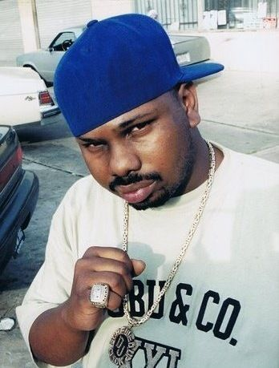

DJ Screw
Robert Earl Davis Jr. (July 20, 1971 – November 16, 2000), better known by his stage name DJ Screw, was an American hip hop DJ based in Houston, Texas, and best known as the creator of the now-famous chopped and screwed DJ technique. He was known as a central and influential figure in the Houston hip hop community and was the leader of Houston's Screwed Up.
Davis released over 200 mixtapes and was recognized as an innovator mostly on a regional level until his death of codeine overdose in 2000. His legacy was discovered by a wider audience around 2005, and has gone on to influence a wide variety of artists.